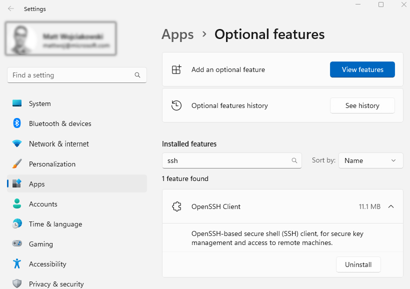
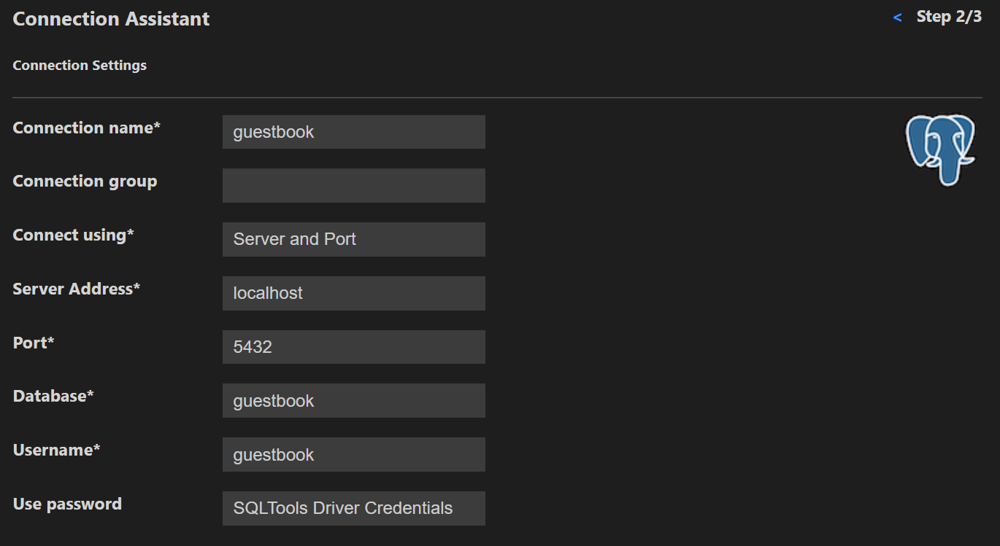
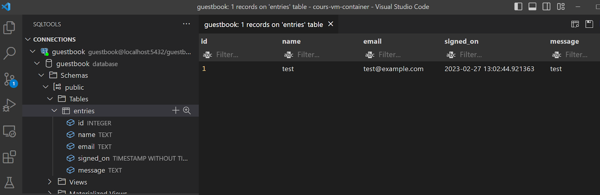
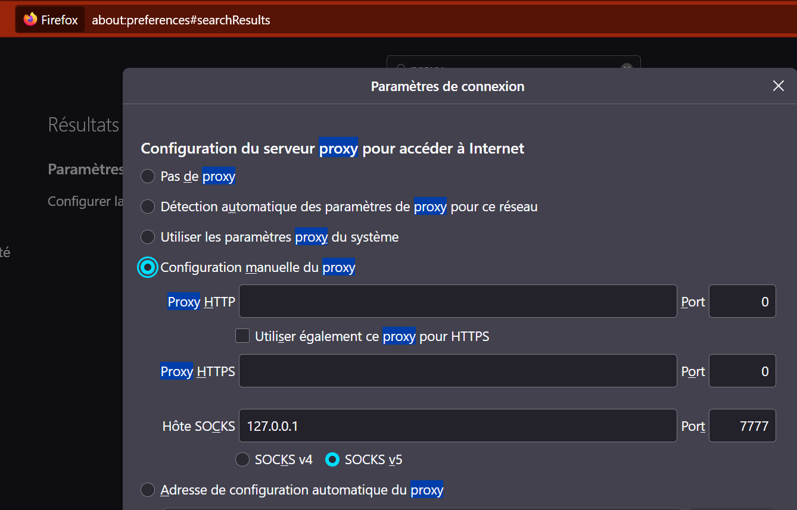

You'll learn how to configure SSH access to your Virtual Machine and set up password-less login.
$ sudo apt-get install openssh-server
$ ip address
$ ssh debian@<remote_host>
Replace
Windows has a built-in SSH client that you can use in Windows Terminal.
You can check that it is installed in Windows Settings > Apps > Optional features, then search for "OpenSSH" in your installed features.

On GNU/Linux Debian you can install the client with
$ sudo apt-get install openssh-client
We are going to generate a SSH key pair, which will allow us to connect without a password.
On your host (windows) or in another vm generate your key pair.
PS> ssh-keygen -t ed25519
On windows you can use this trick
PS> type $env:USERPROFILE\.ssh\id_ed25519.pub | ssh debian@<remote_host> "cat >> .ssh/authorized_keys"
On GNU/Linux
$ ssh-copy-id debian@<remote_host>
PS> ssh debian@<remote_host>
We want to connect to the Database Server from a Tool on our host machine. However, by default you cannot connect directly to a PostgreSQL server from an external connection. They are disabled by in pg_hba.conf (more on this in another lab).
Before connecting you can specify a local port which will be mapped to a remote host and ip. Lets redirect traffic from the host DB port to the localhost DB port inside the virtual machine.
PS> ssh -L 5432:127.0.0.1:5432 debian@<remote_host>
Use VScode SQLTools with PostgreSQL drivers to connect to the database:
Adapt the credentials according to your setting

You can then explore the database.

You can use your new SSH key to authenticate with GitHub and remove the need to enter your password for every git clone, pull or push action.
Git clone a repository with the git/ssh url: git@github.com:heg-web/[algopy-...].git
We are going to create a new virtual machine on a cloud provider. In modern cloud infrastructure, login is mostly done via SSH keys. The key is directly added to the virtual machine at creation and allows login without ever setting a password.
Project > Compute > Key Pairs and click Import Public KeyUse Quickstart > Instances > Create Instance
Create a simple virtual machine with the following options:
OS: Debian 11
CPU: 2
Ram: 2GB
Volume: 10GB / Standard
SSH Keypairs: your imported keyUse the displayed external ip to connect to your new machine from your host.
PS> ssh debian@<remote_host>
Run the lscpu command
$ lscpu
What is the Hypervisor used on this platform ?
Go into the switch engine instances and look at your virtual machines' advanced settings.
Which security Groups are applied?
We are going to test creating a virtual machine on Google Cloud.
You can now connect with
PS> ssh <username>@<remote_host>
Run the lscpu command
$ lscpu
What is the Hypervisor used on this platform ?
As we have a virtual machine located in the US region we will try SSH Socks forwarding.
Reconnect via ssh but with Dynamic Port Forwarding
PS> ssh -D 7777 <username>@<remote_host>
Use this socks proxy 127.0.0.1:7777 with one of your browsers.
For example in Firefox:

Now go to https://whatismyipaddress.com/
Try to play a video from https://www.rts.ch/
Does it work?